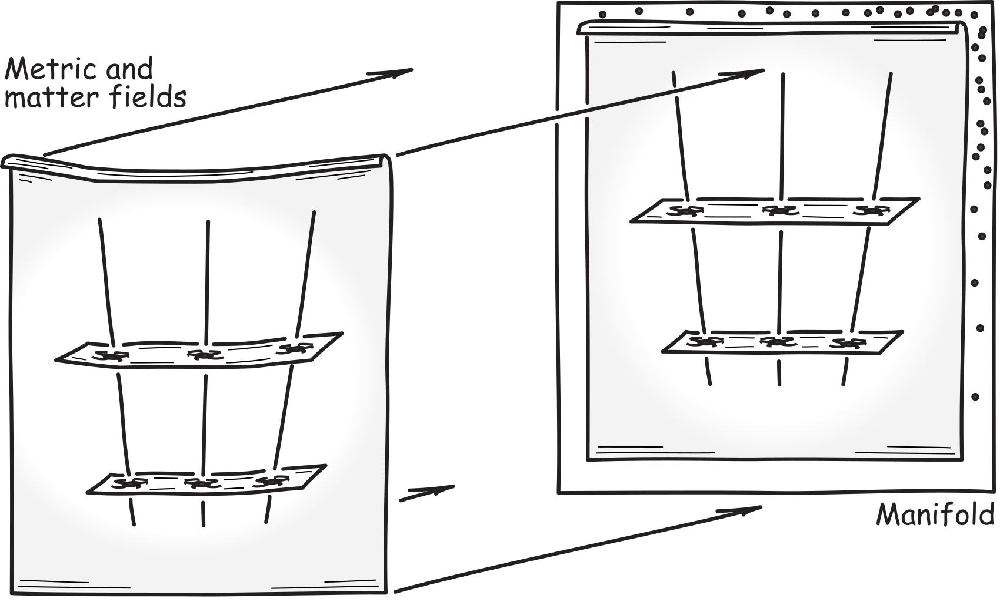
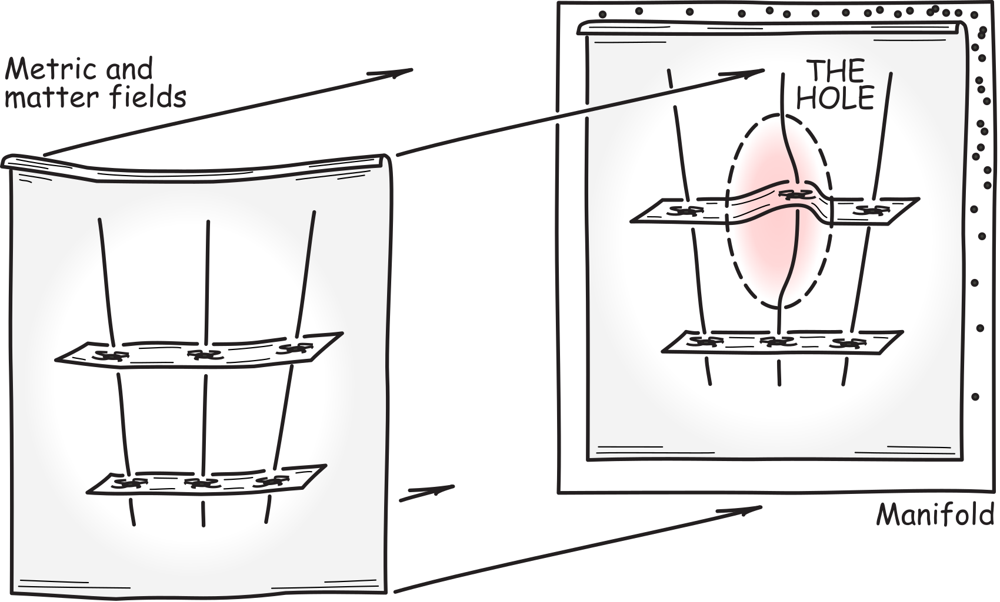
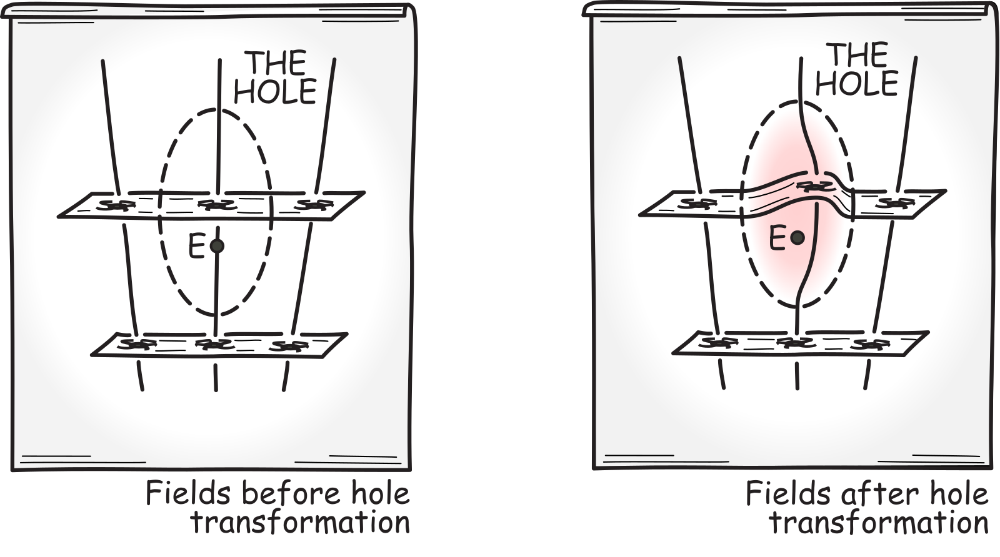

The Hole Argument
What is space? What is time? Do they exist independently of the things and processes in them? Or is their existence parasitic on those things and processes? Are they like a canvas onto which an artist paints; they exist whether or not the artist paints on them? Or are they akin to parenthood; there is no parenthood until there are parents and children? That is, is there no space and time until there are things with spatial properties and processes with temporal durations?
These questions have long been debated and continue to be debated. The hole argument arose when these questions were asked in the context of modern spacetime physics, and in particular in the context of Einstein’s general theory of relativity. In that context, space and time are fused into a single entity, spacetime, and we inquire into its status. One view is that spacetime is a substance: a thing that exists independently of the processes occurring within it. This is spacetime substantivalism. The hole argument seeks to show that this viewpoint leads to unpalatable conclusions in a large class of spacetime theories. In particular, it seeks to show that spacetime substantivalism leads to a failure of determinism, meaning that a complete specification of the state of the universe at a given time, alongside the laws of nature of the theory under consideration (e.g., the laws of general relativity, which are Einstein’s field equations), fails to determine uniquely how the universe will evolve to the future. It also presents a verificationist dilemma, for it appears to lead to the unexpected conclusion that there are facts about the world which we can never know. Although these problems are neither logically contradictory nor refuted by experience, many would nevertheless regard them as being unpalatable.
Thereby, the hole argument provides a template for the analysis of what are known as ’gauge redundancies’ in physical theories: i.e., the existence of surplus mathematical structure in such theories. We learn from it that the identification of surplus mathematical structure cannot be achieved by any a priori or purely mathematical rule. Some physical grounds are needed. In line with the above, the hole argument provides two grounds that can be used: (i) verifiability—changes in the candidate surplus structure make no difference to what can be verified in observation; and (ii) determinism—the laws of the theory are unable to fix the candidate surplus structure.
The hole argument was invented for slightly different purposes by Albert Einstein late in 1913 as part of his quest for the general theory of relativity. It was revived and reformulated in the modern context by John3 = John Earman \(\times\) John Stachel \(\times\) John Norton.
See Stachel (2014) for a review that covers the historical aspects of the hole argument and its significance in philosophy and physics. It is written at a technically more advanced level than this article. For another recent review of the hole argument, see Pooley (2021).
- 1. Modern Spacetime Theories: A Beginner’s Guide
- 2. The Freedom of General Covariance
- 3. The Preservation of Invariants
- 4. What Represents Spacetime?
- 5. The Price of Spacetime Substantivalism
- 6. Unhappy Consequences
- 7. The Hole Argument in Brief
- 8. The History of the Hole Argument
- 9. Responses to the Hole Argument
- 10. Broader Significance of the Hole Argument
- Bibliography
- Academic Tools
- Other Internet Resources
- Related Entries
1. Modern Spacetime Theories: A Beginner’s Guide
Virtually all modern spacetime theories are now built in the same way. The theory posits a manifold of events and then assigns further structures to those events to represent the content of spacetime. A standard example is Einstein’s general theory of relativity. As a host for the hole argument, we will pursue one of its best known applications, the expanding universes of modern relativistic cosmology.
This one example illustrates the core content of the hole argument. With only a little further effort, the argument can be made more precise and general. This will be done concurrently in these notes,[1] intended for readers with some background in differential geometry and general relativity.
Here are the two basic building blocks of modern, relativistic cosmology: a manifold of events and the fields defined on it.
Manifold of Events. Consider our universe, which relativistic cosmologies attempt to model. Its spacetime is the entirety of all space through all time. The events of this spacetime are generalizations of the dimensionless points of ordinary spatial geometry. A geometric point in ordinary spatial geometry is just a particular spot in the space and has no extension. Correspondingly, an event in spacetime is a particular point in a cosmological space at a particular moment of time.
So far, all we have defined is a set of events. To be a four-dimensional manifold, the set of events must be a little bit more organized. In a real spacetime, we have the idea that each event sits in some local neighborhood of events; and this neighborhood sits inside a larger neighborhood of events; and so on. That extra organization comes from the requirement that we can label the events with four numbers—or at least we can do this for any sufficiently small chunk of the manifold. These labels form coordinate systems. The fact that four numbers are just sufficient to label the events makes the manifold four-dimensional. We can now pick out neighborhoods of some event as the set of all points whose spacetime coordinates differ from our starting event by at most one unit; or two units; or three units; etc.. That gives us the nested neighborhoods of events. Figure 1 illustrates how a set of events may be made into a two dimensional manifold by assigning “\(x\)” and “\(y\)” coordinates to the events.

Figure 1. Forming a manifold of events
Metrical Structure and Matter Fields. In specifying that events form a four dimensional manifold, there is still a lot we have not said about the events. We have not specified which events lie in the future and past of which other events, how much time elapses between these events, which events are simultaneous with others so that they can form three dimensional spaces, what spatial distances separates these events, and many more related properties.
These additional properties are introduced by specifying the metric field. To see how this field provides that information, imagine a curve connecting a given pairs of events in spacetime. The information about times elapsed and spatial distances is given by the times elapsed and distances along such curves. See Figure 2:
![A rectangle is labeled ‘a manifold of events’. The events are shown as dots. An up arrow labeled ‘time’ indicate that time is represented as advancing in the up-vertical direction and a two-headed horizontal arrow labeled ‘space’ indicates that space is spread across horizontally. A constant time surface, seen side on as a parallelogram, has two points representing events connected by a line. The surface is labeled ‘Events at the same time form a surface in the manifold that is a snapshot of space at one instant’. and ‘Metric measures distance along curves in space that connect events at the same time’. A vertical line connects two events, represented as dots, labeled ‘earlier’ and ‘later’. The line is labeled ‘Metric measures time elapsed along worldliness between earlier and later events’.](2.svg)
Figure 2. The function of the metric field.
That information could be supplied by a huge catalog that specifies the spatial or temporal distance between pairs of events along curves connecting them. Such a huge catalog would be massively redundant, however. If we know the distance from \(A\) to \(B\) and from \(B\) to \(C\) along some curve, then we know the distance from \(A\) to \(C\) along that curve as well. The minimum information we need is the temporal and spatial distance between each event and all those (loosely speaking) infinitesimally close to it. That information is what the metric field provides. It is a “field” since that information belongs just to one event. We can then piece together temporal and spatial distance along any curve just by summing all the distances between successive infinitesimally close points along the curve.
The matter of the universe is represented by matter fields. The simplest form of matter—the big lumps that make galaxies—can be represented by worldlines that trace out the history of each galaxy through time. In standard models, the galaxies recede from one another and this is represented by a spreading apart of the galactic worldlines as we proceed to later times. See Figure 3:
![In a rectangle, an up arrow labeled ‘time’ indicate that time is represented as advancing in the up-vertical direction and a two-headed horizontal arrow labeled ‘space’ indicates that space is spread across horizontally. An instant of space is seen side on as a parallelogram. Tiny sketches of five galaxies are laid out across the parallelogram. Five nearly vertical lines are drawn through the galaxies such that they spread apart as they proceed up the figure. They are labeled ‘Worldlines of galaxies’.](3.svg)
Figure 3. Galaxies in an expanding universe.
2. The Freedom of General Covariance
Newton’s first law states that force-free bodies move on straight-line trajectories through spacetime. Clearly, this law as stated cannot be true in all coordinate systems, for imagine such a system accelerating with respect to one in which the law holds true: in the accelerating coordinate system, the force-free bodies will also appear to accelerate! So Newton’s first law is not—to use a piece of terminology introduced by Einstein in his quest for the general theory of relativity in the 1910s—‘generally covariant’. When Einstein finally arrived at his completed theory of general relativity in 1915, one of its novel features was its general covariance: unlike Newton’s first law in its formulation above, if the Einstein field equations of general relativity hold in one coordinate system, then they hold true in all coordinate systems related to that original system by smooth but otherwise arbitrary transformations. General relativity was, indeed, the first spacetime theory in which one was free to use arbitrary spacetime coordinate systems in this way. This feature is now shared by virtually all modern formulations of spacetime theories, including modern versions of special relativity and (perhaps surprisingly!) Newtonian spacetime theory (on the latter, see e.g. Friedman (1983)).
In its original form, general covariance was understood “passively”; that is, as a freedom to describe structures in spacetime by means of arbitrarily chosen coordinate systems. That freedom is closely related to another freedom, known as “active” general covariance. According to active general covariance, we are licensed to spread structures like metric fields over the manifold in as many different ways as there are coordinate transformations, and the resulting redistributions of said fields on the manifold will preserve solutionhood of the theory under consideration. Passive general covariance is not equivalent to active general covariance defined in this way, for a theory can be passively generally covariant and yet arbitrary smooth redistributions of the fields on the manifold will in general fail to preserve solutionhood: the details are not important here, but see Pooley (2017) for further discussion. (For a more extensive account of the relationship between active and passive covariance, see also the supplementary document: Active and Passive Covariance.)[2] What is important is that every ‘local’ spacetime theory (to use terminology of Earman & Norton (1987)) is actively generally covariant, and so will be subject to a version of the hole argument—this includes both special relativity and certain formulations of Newtonian mechanics. (One view is that this goes too far, and that general relativity is distinct from many other spacetime theories in that its spacetime geometry has become dynamical and it is only in such theories that the hole argument should be mounted: for further discussion, see Earman (1989, Ch.9, Section 5), Stachel (1993), and Iftime and Stachel (2006).)
In what follows, we’ll focus on active general covariance, which is indeed a property possessed by general relativity (as well as other local spacetime theories). The essential manipulation of the hole argument involves exercising this freedom. Figure 4 illustrates one way that we might spread the metrical structure and matter fields over the manifold of spacetime events:

Figure 4. One way to spread metric and matter over the manifold.
Figure 5 illustrates a second way:

Figure 5. Another way to spread metric and matter over the manifold.
We shall call the transformation between the two spreadings a “hole transformation.” The dotted region is The Hole. The first distribution of metric and matter fields is transformed into the second in a way that
- leaves the fields unchanged outside the hole;
- within the hole they are spread differently;
- and the spreadings inside and outside the hole join smoothly.[3]
Importantly, both the pre- and post-transformed states in Figure 5 are solutions of Einstein’s field equations of general relativity—meaning that they both represent possible ways for the world to be, according to the theory.
3. The Preservation of Invariants
3.1 Invariants
The two different spreadings share one vital characteristic upon which the hole argument depends: the two spreadings agree completely on all invariant properties.
These invariant properties are, loosely speaking, the ones that are intrinsic to the geometry and dynamics, such as distance along spatial curves and time along worldlines of galaxies, the rest mass of the galaxy, the number of particles in it, as well as a host of other properties, such as whether the spacetimes are metrically flat or curved.
The invariant properties are distinguished from non-invariant properties. Best known of the non-invariant properties are those dependent on a particular choice of coordinate system. For example, just one event in a two-dimensional Euclidean space lies at the origin of a coordinate system, that is, at \(x=0,\) \(y=0\). But which event that is changes when we change our coordinate system. So “being at the origin” is not an invariant. The spatial distance between two points, however, is that same no matter which coordinate system is used to describe the space. It is an invariant.
While the fields are spread differently in the two cases, they agree in all invariant properties; so, in invariant terms, they are the same.
3.2 Invariants and Observables
There is a special relationship between the invariants of a spacetime theory and its observables, i.e. those quantities which are accessible to observational verification:
All observables can be reduced to invariants.
For example, if one makes a journey from one galaxy to another, all observables pertinent to the trip will be invariants. These include the time elapsed along the journey, whether the spaceship is accelerating or not at any time in its journey, the age of the galaxy one leaves at the start of the trip and the age of the destination galaxy at the end and all operations that may involve signaling with particles or light pulses.
Therefore, since the two spreadings or distributions of metric and matter fields of a hole transformation agree on invariants, they also agree on all observables. They are observationally indistinguishable.
4. What Represents Spacetime?
Recall our original concern: we want to know whether we can conceive of spacetime as a substance—that is, as something that exists independently of the material events which unfold within it. To do this, we need to know what in the above structures represents spacetime. One popular answer to that question is that the manifold of events represents spacetime. This choice is natural since modern spacetime theories are built up by first positing a manifold of events and then defining further structures on them. So, on a realist view of physical theories on which they are to be understood ‘literally’, it is very natural to regard the manifold as being an independently existing structure that bears properties, and which thereby plays the role of a container just as we expect that spacetime does.[4]
One might wonder whether some of the further structures defined on the manifold represent further properties of spacetime rather than what is contained within spacetime. In particular, the metric field contains important information on spatial distances and times elapsed. Ought that not also to be considered a part of the containing spacetime as opposed to what is contained within spacetime?
Against this line of thought, some would argue that general relativity makes it hard to view the metric field simply as being part of the containing spacetime. For, in addition to spatial and temporal information, the metric field also represents the gravitational field. Therefore it also carries energy and momentum—the energy and momentum of the gravitational field (although a notorious technical problem in general relativity precludes identifying the energy and momentum density of the gravitational field at any particular event in spacetime). This energy and momentum is freely interchanged with other matter fields in spacetimes. To carry energy and momentum is (the thought goes) a natural distinguishing characteristic of matter contained within spacetime.
So, the metric field of general relativity seems to defy easy characterization. We would like it to be exclusively part of spacetime the container, or exclusively part of matter the contained. Yet it seems to be part of both. But in any case, the crucial point to note here (contrary to some historical writing on the hole argument) is that one need not settle this issue in order to get the hole argument off the ground! As long as one is dealing with a theory which is actively generally covariant in the sense articulated above, the hole argument will rear its head, as we will now see.
5. The Price of Spacetime Substantivalism
So far we have characterized the substantivalist doctrine as the view that spacetime has an existence independent of its contents. This formulation conjures up powerful if vague intuitive pictures, but it is not clear enough to be deployed in the context of the interpretation of physical theories. If we represent spacetime by a manifold of events, how do we characterize the independence of its existence? Is it the counterfactual claim that were there no metric or matter fields, there would still be a manifold of events? That counterfactual is automatically denied by the standard formulation which posits that all spacetimes have at least metrical structure. That seems too cheap a refutation of manifold substantivalism. Surely, there must be an improved formulation. Fortunately, we do not need to wrestle with finding it. For present purposes we need only consider a consequence of the substantivalist view and can set aside the task of giving a precise formulation of that view.
In their celebrated debate over space and time, Leibniz taunted the substantivalist Newton’s representative, Clarke, by asking how the world would change if East and West were switched. For Leibniz there would be no change since all spatial relations between bodies would be preserved by such a switch. But the Newtonian substantivalist had to concede that the bodies of the world were now located in different spatial positions, so the two systems were physically distinct.
Correspondingly, when we spread the metric and matter fields differently over a manifold of events, we are now assigning metrical and material properties in different ways to the events of the manifold. For example, imagine that a galaxy passes through some event E in the hole. After the hole transformation, this galaxy might not pass through that event. For the manifold substantivalist, this must be a matter of objective physical fact: either the galaxy passes through E or not. The two distributions represent two physically distinct possibilities.

Figure 6. Does the galaxy pass through event \(E\)?
That is, manifold substantivalists must (it seems) deny an equivalence inspired by Leibniz’ taunt which is thus named after him:[5]
Leibniz Equivalence. If two distributions of fields are related by a smooth transformation, then they represent the same physical systems.
The supplementary document Visualizing Leibniz Equivalence Through Map Projections illustrates the essential idea of Leibniz Equivalence through an analogy with different map projections of the Earth’s surface.
6. Unhappy Consequences
We can now assemble the pieces above to generate unhappy consequences for the manifold substantivalist. Consider the two distributions of metric and material fields related by a hole transformation. Since the manifold substantivalist denies Leibniz Equivalence, the substantivalist must hold that the two systems represent distinct physical systems. But the properties that distinguish the two are very elusive. They escape both (a) observational verification and (b) the determining power of cosmological theory.
(a) Observational verification. The substantivalist must insist that it makes a physical difference whether the galaxy passes through event \(E\) or not. But we have already noticed that the two distributions are observationally equivalent: no observation can tell us if we are in a world in which the galaxy passes through event \(E\) or misses event \(E\).
It might be a little hard to see from Figure 6 that the two distributions are observationally equivalent. In the first distribution on the left, the middle galaxy moves in what looks like a straight line and stays exactly at the spatial midpoint between the galaxies on either side. In the second distribution on the right, all that seems to be undone. The galaxy looks like it accelerates in taking a swerve to the right, so that it moves closer to the galaxy on its right.
These differences that show up in the portrayal of Figure 6 are all non-invariant differences. For the right hand distribution, the galaxy does veer to the right in the figure, but at the same time, distances between events get stretched as well, just as they get stretched in the various map projections shown in the supplement, Visualizing Leibniz Equivalence Through Map Projections. So the galaxy always remains at the spatial midpoint of the galaxies on either side; it just doesn’t look like it is at the spatial midpoint from the way the figure is drawn.
Similarly, an acceleration vector along the galaxy’s worldline determines whether the galaxy is accelerating. That acceleration vector is an invariant. So, if the galaxy in the left hand distribution has a zero acceleration vector, then the corresponding galaxy in the right hand distribution will also have a zero acceleration vector. Remember, a hole transformation preserves invariants. So if a galaxy is unaccelerated in the left hand distribution, it is also unaccelerated in the right hand distribution.
(b) Determinism. The physical theory of relativistic cosmology is unable to pick between the two cases. This is manifested as an indeterminism of the theory. We can specify the distribution of metric and material fields throughout the manifold of events, excepting within the region designated as The Hole. Then the theory is unable to tell us how the fields will develop into The Hole. Both the original and the transformed distribution are legitimate extensions of the metric and matter fields outside The Hole into The Hole, since each satisfies all the laws of the theory of relativistic cosmology. The theory has no resources which allow us to insist that one only is admissible.
It is important to see that the unhappy consequence does not consist merely of a failure of determinism. We are all too familiar with such failures and it is certainly not automatic grounds for dismissal of a physical theory. The best known instance of a widely celebrated, indeterministic theory is quantum theory, where, in the standard interpretation, the measurement of a system can lead to an indeterministic collapse onto one of many possible outcomes. Less well known is that it is possible to devise indeterministic systems in classical physics as well. Most examples involves oddities such as bodies materializing at unbounded speed from spatial infinity, so called “space invaders.” (Earman, 1986a, Ch. III; see also determinism: causal) Or they may arise through the interaction of infinitely many bodies in a supertask (Supertasks). More recently, an extremely simple example has emerged in which a single mass sits atop a dome and spontaneously sets itself into motion after an arbitrary time delay and in an arbitrary direction (Norton, 2003, Section 3).
The problem with the failure of determinism in the hole argument is not the fact of failure but the way that it fails. If we deny manifold substantivalism and accept Leibniz Equivalence, then the indeterminism induced by a hole transformation is eradicated. While there are uncountably many mathematically distinct developments of the fields into the hole, under Leibniz Equivalence, they are all physically the same. That is, there is a unique development of the physical fields into the hole after all. Thus the indeterminism is a direct consequence of the substantivalist’s metaphysical commitments. Similarly, if we accept Leibniz Equivalence, then we are no longer troubled that the two distributions cannot be distinguished by any possible observation. They are merely different mathematical descriptions of the same physical reality and so should agree on all observables.
So, the anti-substantivalist conclusion invited by the hole argument is this. We can load up any physical theory with objects or properties (here: spacetime events) that cannot be fixed by observation. If their invisibility to observation is not already sufficient warning that these properties are illegitimate, then finding that they visit indeterminism onto a theory that is otherwise deterministic ought to be warning enough. Therefore, such objects or properties (again, here spacetime events) should be discarded along with any doctrine that requires their retention.
7. The Hole Argument in Brief
In sum, the hole argument amounts to this:[6]
- If one has two distributions of metric and material fields related by a hole transformation, then manifold substantivalists must maintain that the two systems represent two distinct physical systems (i.e., they must deny Leibniz Equivalence).
- This physical distinctness transcends both observation and the
determining power of the theory since:
- The two distributions are observationally identical.
- The laws of the theory cannot pick between the two developments of the fields into the hole.
- Therefore, the manifold substantivalist advocates a problematic metaphysics which should be discarded.
8. The History of the Hole Argument
8.1 Einstein Falls into the Hole…
The hole argument was created by Albert Einstein late in 1913 as an act of desperation when his quest for his general theory of relativity had encountered what appeared to be insuperable obstacles. Over the previous year, he had been determined to find a gravitation theory that was generally covariant in the sense introduced above. He had even considered essentially the celebrated generally covariant equations he would settle upon in November 1915 and which now appear in all the textbooks.
Unfortunately, Einstein had at least initially been unable to see that these equations were admissible. Newton’s theory of gravitation worked virtually perfectly for weak gravitational fields. So it was essential that Einstein’s theory revert to Newton’s in that case. But try as he might, Einstein could not see that his equations and many variants of them could properly mesh with Newton’s theory. In mid 1913 he published a compromise: a sketch of a relativistic theory of gravitation that was not generally covariant. (For further details of these struggles, see Norton (1984).)
His failure to find an admissible generally covariant theory troubled Einstein greatly. Later in 1913 he sought to transform his failure into a victory of sorts: he thought he could show that no generally covariant theory at all is admissible. Any such theory would violate what he called the Law of Causality—we would now call it determinism. He sought to demonstrate this remarkable claim with the hole argument.
In its original incarnation, Einstein considered a spacetime filled with matter excepting one region, the hole, which was matter-free. (So in this original form, the term “hole” makes more sense than in the modern version.) He then asked if a full specification of both metric and material fields outside the hole would fix the metric field within. Since he had tacitly eschewed Leibniz Equivalence, Einstein thought that the resulting negative answer sufficient to damn all generally covariant theories.
8.2 …and Climbs out Again
Einstein struggled on for two years with his misshapen theory of limited covariance. Late in 1915, as evidence of his errors mounted inexorably, Einstein was driven to near despair and ultimately capitulation. He returned to the search for generally covariant equations with a new urgency, fueled in part by the knowledge that none other than David Hilbert had thrown himself into analysis of his theory. Einstein’s quest came to a happy close in late November 1915 with the completion of his theory in generally covariant form.
For a long time it was thought that Hilbert had beaten Einstein by five days to the final theory. New evidence in the form of the proof pages of Hilbert’s paper now suggests he may not have. More importantly, it shows clearly that Hilbert, like Einstein, at least temporarily believed that the hole argument precluded all generally covariant theories and that the belief survived at least as far as the proof pages of his paper. (See Corry, Renn and Stachel 1997.)
While Einstein had tacitly withdrawn his objections to generally covariant theories, he had not made public where he thought the hole argument failed. This he finally did when he published what John Stachel calls the “point-coincidence argument.” This argument, well known from Einstein’s (1916, p.117) review of his general theory of relativity, amounts to a defence of Leibniz Equivalence. He urges that the physical content of a theory is exhausted by the catalog of the spacetime coincidences it licenses. For example, in a theory that treats particles only, the coincidences are the points of intersection of the particle worldlines. These coincidences are preserved by transformations of the fields. Therefore two systems of fields that can be intertransformed have the same physical content; they represent the same physical system.
Over the years, the hole argument was deemed to be a trivial error by an otherwise insightful Einstein. It was John Stachel (1980) who recognized its highly non-trivial character and brought this realization to the modern community of historians and philosophers of physics. (See also Stachel, 1986.) In Earman and Norton (1987), the argument was recast as one that explicitly targets spacetime substantivalism. For further historical discussion, see Howard and Norton (1993), Janssen (1999), Klein (1995) and Norton (1987). A thorough, synoptic treatment in four volumes is Renn (2007); for a history of the philosophical revival of the hole argument, see Weatherall (2020).
For an account of the appropriation and misappropriation of Einstein’s point-coincidence argument by the logical empiricists, see Giovanelli (2013).
9. Responses to the Hole Argument
There are at least as many responses to the hole argument as authors who have written on it. In this section, we regiment the literature by considering five broad classes of response to the argument since it was revitalised in the philosophical literature of the 1980s. In the course of scrutinizing the argument, by now virtually all its aspects have been weighed and tested.
9.1 Reject substantivalism
One line of thought simply agrees that the hole argument makes acceptance of Leibniz Equivalence compelling. It seeks to make more transparent what that acceptance involves by trying to find a single mathematical structure that represents a physical spacetime system rather than the equivalence class of intertransformable structures licensed by Leibniz Equivalence. One such attempt involves the notion of a “Leibniz algebra” (see Earman, 1989, Ch. 9, Sect. 9). It is unclear that such attempts can succeed. Just as intertransformable fields represent the same physical system, there are distinct but intertransformable Leibniz algebras with the same physical import. If the formalisms of manifolds and of Leibniz algebras are intertranslatable, one would expect the hole argument to reappear in the latter formalism as well under this translation. (See Rynasiewicz, 1992.)
Another approach seeks to explain Leibniz Equivalence and demonstrate the compatibility of general relativity with the hole argument through the individuation of spacetime points by means of “Dirac observables” and an associated gauge fixing stipulation (Lusanna and Pauri, 2006). More generally, we may well wonder whether the problems faced by spacetime substantivalism are artifacts of the particular formalism described above. Bain (1998, 2003) has explored the effect of a transition to other formalisms (including but not limited to Leibniz algebras).
9.2 Accept the indeterminacy
An alternative response to the hole argument is to accept that generally covariant theories of space and time such as general relativity are indeterministic. Perhaps (the thought goes) this indeterminism is not troubling, because it is an indeterminism only about which objects instantiate which properties and not about which patterns of properties are instantiated. It is not obvious, however, that this is sufficient to defuse worries about indeterminism: at the very least, if another response to the argument were available, they would seem to be preferable.
A related response here is to redefine determinism, and to argue that, in the relevant sense, theories such as general relativity are deterministic after all, in spite of the hole argument. Modifications to the definition of determinism in light of the hole argument have been explored by Belot (1995b), Brighouse (1994, 2020), Butterfield (1989), Melia (1999), and Pooley (2021).
9.3 Metric essentialism
In his own highly original response to the hole argument, Maudlin (1990) urges that each spacetime event carries its metrical properties essentially; that is, it would not be that very event if (after redistribution of the fields) we tried to assign different metrical properties to it. As a result, although there appears to be a class of distinct possible worlds associated with each class of intertransformable solutions of general relativity (or whatever other actively generally covariant theory in which one is interested), in fact only one such world is metaphysically possible, and thereby the hole argument is vitiated. Teitel (2019) has explored a refined version of this essentialist response but concludes that it fails to improve on standard modal responses to the hole argument. Butterfield (1989) portrays intertransformable systems as different possible worlds and uses counterpart theory to argue that at most one can represent an actual spacetime. (For an updated version of Butterfield’s appeal to counterpart theory, see Butterfield & Gomes (2023a, 2023b).)
9.4 Sophisticated substantivalism
Maudlin’s metrical essentialism is an example of ‘sophisticated substantivalism’. This term was introduced—in a somewhat pejorative sense—by Belot & Earman (2001) to refer to a class of views according to which it is legitimate after all for a substantivalist to deny that systems related by hole transformation represent distinct possibilities, thereby side-stepping the hole argument. Another version of sophisticated substantivalism is anti-haecceitist substantivalism, according to which physical spacetime points do not possess trans-world identities. The distinctness of worlds in which the material content of the universe is shifted from its distribution in the actual world presupposes such identities. Thus the apparent indeterminism of general relativity and other actively generally covariant theories is avoided by denying such identities. This position is currently a popular response to the hole argument: for discussion e.g. Hoefer (1996) and Pooley (2006b); for some concerns that the position is metaphysically obscure, see Dasgupta (2011).
Another related version of sophisticated substantivalism has it that spacetime is better represented not by the manifold of events alone but by some richer structure, such as the manifold of events in conjunction with metrical properties. (See, for example, Hoefer, 1996.) What motivates this escape is the idea that the manifold of events lacks properties essential to spacetime. For example, there is no notion of past and future, of time elapsed or of spatial distance in the manifold of events. Thus one might be tempted to identify spacetime with the manifold of events plus some further structure that supplies these spatiotemporal notions. Thereby, the thought might go, it is the metrical structure which individuates spacetime points non-rigidly. This escape from the hole argument sometimes succeeds and sometimes fails. In certain important special cases, alternative versions of the hole argument can be mounted against the view: see Norton (1988).
9.5 Mathematical/formalist responses
Perhaps the simplest possible challenge to the hole argument maintains that Leibniz Equivalence is a standard presumption in the modern mathematical physics literature and suggests that even entertaining its denial is a mathematical blunder unworthy of serious attention. But in response: while acceptance of Leibniz Equivalence is widespread in the physics literature, it is not a logical truth that can only be denied on pain of contradiction. That it embodies non-trivial assumptions whose import must be accepted with sober reflection is indicated by the early acceptance of the hole argument by none other than David Hilbert himself. (See Section 8.2 above.) If denial of Leibniz Equivalence is a blunder so egregious that no competent mathematician would make it, then our standards for competence have become unattainably high, for they must exclude David Hilbert in 1915 at the height of his powers.
The question has nevertheless been reopened recently by Weatherall (2018), who aargues that intertransformable mathematical structures are taken in standard mathematical practice to be the same structure. Thus they should represent the same physical system, precluding the denial of Leibniz Equivalence. Curiel (2018) argues for a similar triviality conclusion as Weatherall but on a different basis: there is no physical correlate to the hole transformation in standard physical practice. For a response to arguments of this kind, defending the view that this kind of ‘mathematical structuralism’ is insufficient to block the hole argument, see Pooley & Read (2021); likewise, Roberts (2020) has responded that Nature—not mathematical practice—should decide whether two mathematical structures represent the same physical system.
Recently, some authors have argued that modifying the foundations of mathematics from the set-theoretic orthodoxy would be sufficient to block the hole argument: see Ladyman & Presnell (2020) and Dougherty (2020) for discussions of such arguments in the particular context of homotopy type theory. Separately, Halvorson and Manchak (2021) have argued that because there is a unique metric-preserving map (‘isometry’) relating two solutions of general relativity related by the hole transformation, the hole argument is thereby blocked; for sceptical responses to this argument, see Menon & Read (2023).
Belot (2018) argues against a single decision univocally in favor or contrary to Leibniz Equivalence. While allowing that hole transformations relate systems that are physically the same, he argues that in some sectors of general relativity, some transformations that preserve the metric may relate physically distinct systems.
10. Broader Significance of the Hole Argument
The hole argument has had a broader significance in the philosophy of science, pertaining inter alia to realism about theoretical entities, to theories of quantum gravity, and to the issue of gauge freedoms in our physical theories. We discuss all three of these relations in this section; there is also a supplementary document which expands upon the third.
10.1 A Limit to Scientific Realism
The hole argument has presented a new sort of obstacle to the rise of scientific realism. According to that view, we should read the assertions of our mature theories literally. So, if general relativity describes a manifold of events and a metrical structure, then that is literally what is there in the view of the strict scientific realist. To think otherwise, it is asserted, would be to leave the success of these theories an unexplained miracle. If spacetime does not really have the geometrical structure attributed to it by general relativity, then how can we explain the theory’s success?
Appealing as this view is, the hole argument shows that some limits must be placed on our literal reading of a successful theory. Or at least that persistence in such literal readings comes with a high price. The hole argument shows us that we might want to admit that there is something a little less really there than the literal reading says, lest we be forced to posit physically real properties that transcend both observation and the determining power of our theory.
10.2 The Hole Argument and the Quantization of Gravity
One of the most tenacious problems in modern theoretical physics is the quantization of gravity. While Einstein’s 1915 general theory of relativity produced a revolutionary new way of thinking of gravitation in terms of the curvature of spacetime, it is generally agreed now that it cannot be the final account of gravity. The reason is that it is still a classical theory. It does not treat matter in accord with the quantum theory.
The problem of bringing quantum theory and general relativity together in a single theory remains unsolved. (See Quantum Gravity.) There are many contenders, notably string theory and loop quantum gravity. One of the issues that has been raised is that the hole argument has shown us (so goes the claim) that no successful theory of quantum gravity can be set against an independent, container spacetime. John Stachel was an early proponent of this outcome of the hole argument. See Stachel (2006). This issue has often been raised by loop quantum gravity theorists specifically as a criticism of string theoretic approaches, for string theoretic approaches have such a background spacetime. See Rovelli and Gaul (2000) and Smolin (2006); for philosophical engagement with these issues of “background independence”, see Pooley (2017) and Read (2023).
In a related development, Gryb and Thébault (2016) have argued that the problem of the hole argument and the “problem of time” of quantum gravity are essentially the same, given suitable assumptions. For more, see Problem of Time in the article on quantum gravity.
10.3 The Hole Argument and Gauge Freedoms
The hole argument has played a role in the growing recognition in philosophy of physics of the importance of gauge transformations: transformations acting on certain degrees of freedom in our physical theories which are supposed to have no correlates in physical reality. The analysis of the hole argument provides philosophers of physics with a convenient template when they are trying to decide whether or not something is a gauge freedom. As mentioned in the introduction, we learn from the hole argument that the identification of surplus mathematical structure cannot be achieved by any a priori or purely mathematical rule (at least on the assumption that the mathematical/formalist responses to the hole argument discussed above do not succeed). Rather, some physical grounds are needed. The hole argument provides two grounds that can be used: (i) verifiability—changes in the candidate surplus structure make no difference to what can be verified in observation; and (ii) determinism—the laws of the theory are unable to fix the candidate surplus structure. For more detailed discussion on the hole argument and gauge freedoms, see the supplement The Hole Argument as a Template for Analyzing Gauge Freedoms.
Bibliography
- Bain, Jonathan, 1998, Representations of Spacetime: Formalism and Ontological Commitment, Ph.D. Dissertation, Department of History and Philosophy of Science, University of Pittsburgh.
- –––, 2003, “Einstein Algebras and the Hole Argument,” Philosophy of Science, 70: 1073–1085.
- Belot, Gordon, 1995a, “Indeterminism and Ontology,” International Studies in the Philosophy of Science, 9: 85–101.
- –––, 1995b, “New Work for Counterpart Theorists”, British Journal for the Philosophy of Science, 46(2): 185–195.
- –––, 1996, Whatever is Never and Nowhere is Not: Space, Time and Ontology in Classical and Quantum Gravity Ph. D. Dissertation, Department of Philosophy, University of Pittsburgh.
- –––, 1996a, “Why General Relativity Does Need an Interpretation,” Philosophy of Science, 63 (Supplement): S80–S88.
- –––, 2018, “Fifty Million Elvis Fans Can’t be Wrong,” Noûs, 52: 946–981.
- Belot, Gordon and Earman, John, 2001, “Pre-Socratic Quantum Gravity”, in C. Callender and N. Huggett (eds.), Physics Meets Philosophy at the Planck Scale, Cambridge: Cambridge University Press. pp. 213–255.
- Brighouse, Carolyn, 1994, “Spacetime and Holes,” in D. Hull, M. Forbes and R. M. Burian (eds.), PSA 1994, Volume 1, pp. 117–125.
- –––, 2020, “Confessions of a (Cheap) Sophisticated Substantivalist”, Foundations of Physics , 50: 348–359.
- Butterfield, Jeremy, 1988, “Albert Einstein meets David Lewis,” in A. Fine and J. Leplin (eds.), PSA 1988, Volume 2, pp. 56–64.
- –––, 1989, “The Hole Truth,” British Journal for the Philosophy of Science, 40: 1–28.
- Brading, Katherine and Castellani, Elena (eds.), 2003, Symmetries in Physics:Philosophical Reflections, Cambridge: Cambridge University Press, pp. 334–345.
- Corry, Leo, Renn, Juergen, and Stachel, John, 1997, “Belated Decision in the Hilbert-Einstein Priority Dispute,” Science, 278: 1270–73.
- Curiel, Erik, 2018, “On the Existence of Spacetime Structure,” British Journal for the Philosophy of Science, 69: 447–483.
- Dasgupta, Shamik, 2011, “The Bare Necessities”, Philosophical Perspectives, 25: 115–160.
- Dougherty, John, 2020, “The Hole Argument, Take \(n\)”, Foundations of Physics, 50: 330–347.
- Earman, John, 1986, “Why Space is not a Substance (At Least Not to First Degree),” Pacific Philosophical Quarterly, 67: 225–244.
- –––, 1986a, A Primer on Determinism, Dordrecht: Reidel.
- –––, 1989, World Enough and Space-Time: Absolute Versus Relational Theories of Space and Time, Cambridge, MA: MIT Bradford.
- –––, 2003, “Tracking down gauge: an ode to the constrained Hamiltonian formalism”, in K. Brading and E. Castellani (eds.), Symmetries in Physics: Philosophical Reflections, Cambridge: Cambridge University Press, pp. 140–162.
- Earman, John and Norton, John D., 1987, “What Price Spacetime Substantivalism,” British Journal for the Philosophy of Science, 38: 515–525.
- Einstein, Albert, 1916, “The Foundation of the General Theory of Relativity,” in H.A. Lorentz et al., The Principle of Relativity, New York: Dover, 1952, pp. 111–164.
- Friedman, Michael, 1983. Foundations of Space-Time Theories: Relativistic Physics and Philosophy of Science, Princeton, NJ: Princeton University Press.
- Giovanelli, Marco, 2013 “Erich Kretschmann as a Proto-Logical-Empiricist: Adventures and Misadventures of the Point-Coincidence Argument,” Studies in History and Philosophy of Modern Physics, 44: 115–134.
- Gomes, Henrique and Butterfield, Jeremy, 2023a, “The Hole Argument and Beyond, Part I: The Story so Far”.
- –––, 2023b, “The Hole Argument and Beyond, Part II: Treating Non-isomorphic Spacetimes”.
- Gryb, Sean and Thébault, Karim P. Y., 2016, “Regarding the ‘Hole Argument’ and the ‘Problem of Time’,” Philosophy of Science, 83: 563–584.
- Halvorson, Hans and Manchak, J.B., “Closing the Hole Argument”, British Journal for the Philosophy of Science, 2021.
- Healey, Richard, 1999, “On the Reality of Gauge Potentials,” Philosophy of Science, 68: 432–55.
- Hoefer, Carl, 1996, “The Metaphysics of Space-Time Substantivalism,” Journal of Philosophy, 93: 5–27.
- Hoefer, Carl and Cartwright, Nancy, 1993, “Substantivalism and the Hole Argument,” in J. Earman et al. (eds.), Philosophical Problems of the Internal and External Worlds: Essays on the Philosophy of Adolf Gruenbaum, Pittsburgh: University of Pittsburgh Press/Konstanz: Universitaetsverlag Konstanz, pp. 23–43.
- Howard, Don and Norton, John D., 1993, “Out of the Labyrinth? Einstein, Hertz and the Goettingen Answer to the Hole Argument,” in John Earman, Michel Janssen, John D. Norton (eds.), The Attraction of Gravitation: New Studies in History of General Relativity Boston: Birkhäuser, pp. 30–62.
- Iftime, Mihaela and Stachel, John, 2006, “The Hole Argument for Covariant Theories,” General Relativity and Gravitation, 38: 1241–1252.
- Janssen, Michel, 1999, “Rotation as the Nemesis of Einstein’s ‘Entwurf’ Theory,” in Hubert Goenner et al. (eds.), Einstein Studies: Volume 7. The Expanding Worlds of General Relativity, Boston: Birkhaeuser, pp. 127–157.
- Jammer, Max, 1993, Concepts of Space: The History of Theories of Space in Physics, third enlarged edition, New York: Dover, Chapter 6. “Recent Developments.”
- Klein, Martin J. et al. (eds.), 1995, The Collected Papers of Albert Einstein: Volume 4. The Swiss Years: Writing, 1912–1914, Princeton: Princeton University Press.
- Ladyman, James and Presnell, Stuart, 2020, “The Hole Argument in Homotopy Type Theory”, Foundations of Physics, 50: 319–329.
- Lusanna, Luca and Pauri, Massimo, 2006 “Explaining Leibniz Equivalence as Difference of Non-inertial Appearances: Dis-solution of the Hole Argument and Physical Individuation of Point-Events,” Studies in History and Philosophy of Modern Physics, 37: 692–725
- Liu, Chuang, 1996, “Realism and Spacetime: Of Arguments Against Metaphysical Realism and Manifold Realism,” Philosophia Naturalis, 33: 243–63.
- –––, 1996a, “Gauge Invariance, Indeterminism, and Symmetry Breaking,” Philosophy of Science, 63 (Supplement): S71–S80.
- Leeds, Stephen, 1995, “Holes and Determinism: Another Look,” Philosophy of Science, 62: 425–437.
- Macdonald, Alan, 2001, “Einstein’s Hole Argument,” American Journal of Physics, 69: 223–25
- Maudlin, Tim, 1989, “The Essence of Spacetime,” in A. Fine and J. Leplin (eds.), PSA 1988, Volume 2, pp. 82–91.
- –––, 1990, “Substances and Spacetimes: What Aristotle Would have Said to Einstein,” Studies in the History and Philosophy of Science, 21: 531–61.
- Melia, Joseph, 1999, “Holes, Haecceitism and Two Conceptions of Determinism”, British Journal for the Philosophy of Science, 50(4):639–664.
- Menon, Tushar and Read, James, 2023, “Some Remarks on Recent Mathematical-cum-formalist Responses to the Hole Argument”, Philosophy of Science.
- Muller, Fred A., 1995, “Fixing a Hole,” Foundations of Physics Letters, 8: 549–562.
- Mundy, Brent, 1992, “Spacetime and Isomorphism,” in D. Hull, M. Forbes and K. Okruhlik (eds.), PSA 1992, Volume 1, pp. 515–527.
- Norton, John D., 1984, “How Einstein found his Field Equations: 1912–1915,” Historical Studies in the Physical Sciences, 14: 253–316; reprinted in Don Howard and John Stachel (eds.), Einstein and the History of General Relativity: Einstein Studies, Volume 1, Boston: Birkhäuser, 1989, pp. 101–159.
- –––, 1987, “Einstein, the Hole Argument and the Reality of Space,” in John Forge (ed.), Measurement, Realism and Objectivity, Dordrecht: Reidel, pp. 153–188 .
- –––, 1988, “The Hole Argument,” in A. Fine and J. Leplin (eds.), PSA 1988, Volume 2, pp. 56–64.
- –––, 1989, “Coordinates and Covariance: Einstein’s view of spacetime and the modern view,” Foundations of Physics, 19: 1215–1263.
- –––, 1992, “The Physical Content of General Covariance,” in J. Eisenstaedt and A. Kox (eds.), Studies in the History of General Relativity (Volume 3: Einstein Studies), Boston: Birkhauser, pp. 281–315.
- –––, 1992a, “Philosophy of Space and Time,” in M.H. Salmon et al., Introduction to the Philosophy of Science, Englewood Cliffs, NJ: Prentice-Hall; reprinted Hackett Publishing, pp. 179–231.
- –––, 1993, “General Covariance and the Foundations of General Relativity: Eight Decades of Dispute,” Reports on Progress in Physics, 56: 791–858.
- –––, 2003, “Causation as Folk Science,” Philosophers’ Imprint, 3 (4) [available Online].
- –––, 2003a, “General Covariance, Gauge Theories, and the Kretschmann Objection,” in K. Brading and E. Castellani (eds.), Symmetries in Physics: Philosophical Reflections, Cambridge: Cambridge University Press, pp. 110–123.
- –––, 2019, “Ontology of Space and Time: The Hole Argument”, in Einstein for Everyone: available online.
- Pooley, Oliver, 2002, The Reality of Spacetime, D.Phil. thesis, University of Oxford.
- –––, 2006a, “A Hole Revolution, or are We Back Where We Started?”, Studies in History and Philosophy of Modern Physics, 37(2): 372–380.
- –––, 2006b, “Points, Particles, and Structural Realism,” in D. Rickles et al. (eds), The Structural Foundations of Quantum Gravity, Oxford: Oxford University Press, pp. 83–120.
- –––, 2013, “Substantivalist and Relationalist Approaches to Spacetime,” in R. W. Batterman (ed.), The Oxford Handbook of Philosophy of Physics, Oxford: Oxford University Press, pp. 522–586.
- –––, 2017, “Background Independence, Diffeomorphism Invariance and the Meaning of Coordinates”, in D. Lehmkuhl, G. Schiemann and E. Scholz (eds.), Towards a Theory of Spacetime Theories, Basel: Birkhäuser, pp. 105–144.
- –––, 2021, “The Hole Argument”, in E. Knox and A. Wilson (eds.), The Routledge Companion to Philosophy of Physics, London: Routledge, pp. 145–159.
- Pooley, Oliver and Read, James, 2021, “On the Mathematics and Metaphysics of the Hole Argument”, British Journal for the Philosophy of Science.
- Read, James, 2023, Background Independence in Classical and Quantum Gravity, Oxford: Oxford University Press.
- Renn, Juergen, et al. (eds.), 2007, The Genesis of General Relativity: Sources and Interpretations, (Boston Studies in the Philosophy of Science, Volume 250), 4 Volumes, Berlin: Springer.
- Rickles, Dean, 2005, “A New Spin on the Hole Argument,” Studies in History and Philosophy of Modern Physcis, 36: pp. 415–34.
- Roberts, Bryan W., 2020, “Regarding ‘Leibniz Equivalence’”, Foundations of Physics 50: 250–269.
- Rovelli, Carlo and Gaul, Marcus, 2000, “Loop Quantum Gravity and the Meaning of Diffeomorphism Invariance”, in Jerzy Kowalski-Glikman (ed.), Towards Quantum Gravity, Berlin: Springer, pp. 277–324.
- Rynasiewicz, Robert, 1992, “Rings, Holes and Substantivalism: On the Program of Leibniz Algebras,” Philosophy of Science, 45: 572–89.
- –––, 1994, “The Lessons of the Hole Argument,” British Journal for the Philosophy of Science, 45: 407–436.
- –––, 1996, “Is There a Syntactic Solution to the Hole Problem,” Philosophy of Science, 64 (Proceedings): S55–S62.
- –––, 2012, “Simultaneity, convention, and gauge freedom” Studies in History and Philosophy of Modern Physics, 43: 90–94.
- Smolin, Lee, 2006, “The Case for Background Independence”, in Dean Rickles, Steven French and Juha T. Saatsi (eds.), The Structural Foundations of Quantum Gravity, Oxford: Oxford University Press. pp. 196–239.
- Stachel, John, 1980, “Einstein’s Search for General Covariance,” in Don Howard and John Stachel (eds.), Einstein and the History of General Relativity (Einstein Studies, Volume 1), Boston: Birkhäuser, 1989, pp. 63–100. [This paper was first paper read at the Ninth International Conference on General Relativity and Gravitation, Jena.]
- –––, 1986, “What can a Physicist Learn from the Discovery of General Relativity?,” Proceedings of the Fourth Marcel Grossmann Meeting on Recent Developments in General Relativity, R. Ruffini (ed.), Amsterdam: North-Holland, pp. 1857–1862.
- –––, 1993, “The Meaning of General Covariance,” in J. Earman et al. (eds.), Philosophical Problems of the Internal and External Worlds: Essays on the Philosophy of Adolf Gruenbaum, Pittsburgh: University of Pittsburgh Press/Konstanz: Universitaetsverlag Konstanz, pp. 129–160.
- –––, 2006, “Structure, Individuality and Quantum Gravity”, in Dean Rickles, Steven French and Juha T. Saatsi (eds.), The Structural Foundations of Quantum Gravity, Oxford: Oxford University Press. pp. 53–82.
- –––, 2014 “The Hole Argument and Some Physical and Philosophical Implications,” Living Reviews in Relativity, 17(1): available online.
- Teller, Paul, 1991, “Substances, Relations and Arguments About the Nature of Spacetime,” The Philosophical Review, 100(3): 363–97.
- Teitel, Trevor, 2019, “Holes in Spacetime: Some Neglected Essentials,” Journal of Philosophy, forthcoming, preprint available online.
- Weatherall, James O., 2018, “Regarding the ‘Hole Argument’,” British Journal for the Philosophy of Science, 69: 329–350, preprint available online.
- –––, 2020. “Some Philosophical Prehistory of the (Earman-Norton) Hole Argument”, Studies in History and Philosophy of Modern Physics, 70: 79–87.
- Wilson, Mark, 1993, “There’s a Hole and a Bucket, Dear Leibniz,” in P. A. French, T. E. Uehling and H. K. Wettstein (eds.), Philosophy of Science, Notre Dame: University of Notre Dame Press, pp. 202–241.
Academic Tools
How to cite this entry. Preview the PDF version of this entry at the Friends of the SEP Society. Look up topics and thinkers related to this entry at the Internet Philosophy Ontology Project (InPhO). Enhanced bibliography for this entry at PhilPapers, with links to its database.


Other Internet Resources
Preprints
- Iftime, Mihaela, 2006, “Gauge and the Hole Argument,” [Preprint at arXiv.org]
- Lyre, Holger, 1999, “Gauges, Holes, and their ‘Connections’,” [Preprint at arXiv.org]
Other Resources
Acknowledgments
We are grateful to Erik Curiel, Robert Rynasiewicz and Edward N. Zalta for helpful comments on earlier drafts; and to the subject editor Guido Bacciagaluppi for suggestions for revisions.